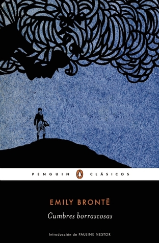

Cumbres borrascosas
Reseña por Jorge I. Zuluaga

Ver detalles · Ver reseña en GoodReads (necesita cuenta)
Leí Cumbres borrascosas para evitar, en primer lugar, que su última adaptación cinematográfica —o mejor dicho, «distorsión»— arruinara mi experiencia de la obra. En segundo lugar, era un clásico que me debía desde hace tiempo, aunque debo confesar que las narraciones victorianas de carácter doméstico no suelen ser mi primera elección. Obviamente, estaba equivocado al calificarla de «no extraordinaria»; simplemente no había prestado atención a las reseñas que señalan las perturbadoras particularidades de esta obra magistral de Emily Brontë.
Leer el libro antes del estreno fue una decisión afortunada. Como es sabido, la película de Emerald Fennell no ha resultado popular y ha encendido debates acalorados. Personalmente, me uno a quienes pensamos que Fennell utilizó el nombre de esta poderosa novela para producir un pastiche al gusto del cine kitsch, con un elenco diseñado más para despertar suspiros que para encarnar la densidad de los personajes.
Pero la novela original... ¡Qué impresión!
Es inusual toparse desde el inicio con la crudeza de unos protagonistas que, en otras obras, suelen revelarse gradualmente. En Cumbres borrascosas bastan unas pocas páginas y el encuentro con un forastero para descifrar la perturbada personalidad de Heathcliff. El resto de la trama solo confirma las sombras de este individuo cruel, vengativo y maltratador; las escenas iniciales en la finca son el umbral perfecto para lo que sigue. Me sorprende que haya lectores y lectoras que intenten rescatar algo positivo de él basándose en su relación con Catherine Earnshaw, la cual yo catalogaría como estrictamente enfermiza.
La estructura narrativa es fascinante. Inicia con un personaje ajeno al núcleo y pronto deriva en el prolongado relato de Ellen «Nelly» Dean, quien se convierte en una narradora poco fiable. Es imposible saber si lo que cuenta Nelly —quien tiene intereses propios en la trama— es fiel a la realidad o si exagera episodios según su conveniencia. Tampoco queda claro cuánto de la personalidad de los protagonistas es una construcción sesgada por sus propios conflictos con ellos. A esto se suma el recurso de la narrativa enmarcada, con cartas que funcionan como historias dentro de la historia.
Sorprende la complejidad de los personajes en los que Brontë siempre busca las sombras más oscuras para ponerlas de relieve. Me llamó especialmente la atención Joseph, quien compite con Heathcliff en brutalidad y fanatismo, robándose el espectáculo en varios apartes de la novela.
De amor, poco o nada. Aunque el inicio sugiera un romance imposible entre la heredera caída en desgracia y el niño «gitano» adoptado, pronto se descubre que este es solo un hilo en un entramado de racismo, clasismo y venganza intergeneracional. Dejémoslo claro: Cumbres borrascosas no es, bajo ninguna circunstancia, una historia de amor. Hay vínculos, sí, pero los actos dominantes en la narración distan mucho de la sublimación del amor romántico o filial.
Podría admitir una excepción en los excelentes capítulos finales dedicados a la compleja relación entre Cathy y Hareton, que evoluciona hacia el afecto, aunque la autora nunca termine de describirlo en detalle como tal.
Me alegra que el estreno de una mala adaptación me haya obligado a descubrir por qué este es uno de los clásicos más impresionantes de la literatura. Este caso me lleva a pensar cuántos otros libros acumulando polvo en mi biblioteca, víctimas de mis propios prejuicios, serán en realidad otras «cumbres borrascosas» a la espera de ser descubiertas.